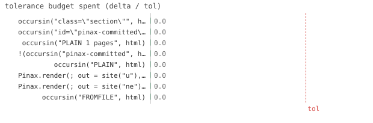

8/8 passed · 0.23s
| id | label | got | want | Δ vs tol (kind) | |
|---|---|---|---|---|---|
| ✓ | t859 | occursin("class=\"section\"", html) @ test_theme.jl:31 code | 1.0 | 1.0 | 0.0 vs 0.5 (abs) |
| ✓ | t860 | occursin("id=\"pinax-committed\"", html) @ test_theme.jl:32 code | 1.0 | 1.0 | 0.0 vs 0.5 (abs) |
| ✓ | t861 | occursin("PLAIN 1 pages", html) @ test_theme.jl:38 code | 1.0 | 1.0 | 0.0 vs 0.5 (abs) |
| ✓ | t862 | !(occursin("pinax-committed", html)) @ test_theme.jl:39 code | 1.0 | 1.0 | 0.0 vs 0.5 (abs) |
| ✓ | t863 | occursin("PLAIN", html) @ test_theme.jl:51 code | 1.0 | 1.0 | 0.0 vs 0.5 (abs) |
| ✓ | t864 | Pinax.render(; out = site("u"), theme = :does_not_exist) @ test_theme.jl:56 code | 1.0 | 1.0 | 0.0 vs 0.5 (abs) |
| ✓ | t865 | Pinax.render(; out = site("ne"), theme = NoEmitTheme()) @ test_theme.jl:61 code | 1.0 | 1.0 | 0.0 vs 0.5 (abs) |
| ✓ | t866 | occursin("FROMFILE", html) @ test_theme.jl:80 code | 1.0 | 1.0 | 0.0 vs 0.5 (abs) |

⤓ downloadmkdoc()
html = read(Pinax.render(; out=site("g")), String)
@test occursin("class=\"section\"", html) # gallery markup@test occursin("id=\"pinax-committed\"", html) # gallery interactive layermkdoc()
html = read(Pinax.render(; out=site("p1"), theme=PlainTheme()), String)
@test occursin("PLAIN 1 pages", html)@test !occursin("pinax-committed", html) # the custom theme owns the whole outputPinax.register_theme!(:plain, PlainTheme())
Pinax.reset!(; theme=:plain)
html = read(Pinax.render(; out=site("p2")), String) # theme taken from the document
@test occursin("PLAIN", html)mkdoc()
@test_throws ErrorException Pinax.render(; out=site("u"), theme=:does_not_exist)mkdoc()
@test_throws ErrorException Pinax.render(; out=site("ne"), theme=NoEmitTheme())# …
function Pinax.emit_document(::FromFileTheme, doc, outdir, cache; comments_file="")
p = joinpath(outdir, "index.html")
write(p, "FROMFILE")
return p
end
FromFileTheme()
""",
)
mkdoc()
html = read(Pinax.render(; out=site("pf"), theme=tf), String)
@test occursin("FROMFILE", html){kind=link}